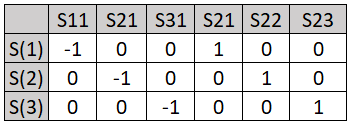

Two-Stage Multi-Arm(common control) designs for continuous endpoints
\(i=\{0,1,2,..,D\}\) : Index for the arms.
\(k =\{1,2\}\) : Index for the stages.
\(I_1 = \{1,2,..D\}\) : Index for the primary hypothesis at stage-1.
\(I_2\) : Index for the primary hypothesis at stage-2.
\(J\) : Index for any intersection hypothesis.
\(j\) : Index for any primary hypothesis as a part of intersection \(J\)
Let \(\bar{X}_{i,k}\) denotes the sample mean for the \(i^{th} \space (i=0,1,2,..,D)\) arm based on the cumulative sample size \(n_{i,k} \space (k=1,2)\)
Under Null, \(\bar{X}_{i,k} \sim N(0, \frac{\sigma_i}{\sqrt{n}})\)
Consider testing any intersection hypothesis \(J\) (\(\forall J \subseteq I_1\)), Let \(\alpha_{J,1}\), denoting the amount of type-1 error to be spent at stage one of a two stage level-\(\alpha\) test, can be obtain by using a spending function or otherwise.
Then the two stage critical boundaries(\(C_{J,1}, C_{J,2}\)) can be computed by solving the following equations.
Once the intermediate results are obtain the later processes are same for all the intersection hypothesis. In this documentation the computations are described for a particular intersection hypothesis \(J\) for which \(w_J\) is given as in the inputs. The code should work for any intersection hypothesis, only thing require is the intersection weights. The length of the \(w_J\) is always same as the number of hypothesis i.e. \(|I_1|\) and \(w_j = 0; \forall j \notin J\)
#--------------------------------------------------------------------------########### probability of crossing the boundary at stage 1############### cJ1 : the stage-1 critical point for the intersection hypothesis HJ# wJ : the weight for the intersection hypothesis HJ# sigmaZ : the co-variance matrix of cummulative z-statistics (2 stages combined)# underNull : TRUE if the probability is under null# Returns: The Probability of rejecting in atleast one primary hypothesis at stage1 #--------------------------------------------------------------------------exitProbStage1 <-function(cJ1, wJ, sigmaZ, underNull=TRUE){ interHyp <-which(wJ !=0)if(underNull) { mu_z <-rep(0, length(interHyp)) } sigma <- sigmaZ[interHyp,interHyp] upper <-qnorm(1-wJ*cJ1) lower <--Inf1- mvtnorm::pmvnorm(lower = lower,upper = upper,mean = mu_z,sigma = sigma )[1]}#--------------------------------------------------------------------------#################### Search for stage-1 boundary ########################### alpha1 : alpha spent at stage 1 # wJ : The weight for the intersection hypothesis HJ# sigmaZ : The co-variance matrix of cummulative z-statistics (2 stages combined)# Returns: The critical point cJ1 for testing HJ at stage1 #--------------------------------------------------------------------------getBdryStage1 <-function(alpha1, wJ, sigmaZ){ minbdry <-0; maxbdry <-1/max(wJ[wJ !=0]) bdry1 <-function(x) {exitProbStage1(cJ1 = x, wJ = wJ, sigmaZ = sigmaZ, underNull=TRUE) - alpha1 }uniroot(f = bdry1, interval =c(minbdry, maxbdry), tol =1E-12)$root}#Stage-1 boundarycJ1 <-getBdryStage1(alpha1, wJ, sigmaZ)print('The planned boundaries to test HJ at stage-1: wj*CJ1')
[1] "The planned boundaries to test HJ at stage-1: wj*CJ1"
cJ1*wJ
[1] 0.0007820295 0.0007820295
print('The Critical Point CJ1')
[1] "The Critical Point CJ1"
cJ1
[1] 0.001564059
#--------------------------------------------------------------------------########### probability of crossing the boundary at stage-2############### cJ1 : The stage-1 critical point for the intersection hypothesis HJ# wJ : The weight for the intersection hypothesis HJ# sigmaZ : The co-variance matrix of cummulative z-statistics (2 stages combined)# underNull : TRUE if the probability is under null# Returns: The Probability of rejecting in atleast one primary hypothesis at stage1 #--------------------------------------------------------------------------exitProbStage2 <-function(cJ2, cJ1, wJ, sigmaZ, underNull=TRUE){ interHyp <-which(wJ !=0)#stage-2 index = stage-1 sigma index + nHypo sigmaIDX <-c(interHyp, interHyp+length(wJ)) if(underNull) { mu_z <-rep(0, length(interHyp)) } sigma <- sigmaZ[sigmaIDX,sigmaIDX] upper <-c(qnorm(1-wJ*cJ1),qnorm(1-wJ*cJ2)) lower <--Inf prob <- mvtnorm::pmvnorm( lower = lower,upper = upper,mean = mu_z,sigma = sigma )[1] (1-prob) #Under null this should be cummulative alpha for that look}#--------------------------------------------------------------------------#################### Search for stage-2 boundary ########################### alpha : planned alpha # cJ1 : The stage-1 critical point for the intersection hypothesis HJ# exitProb1 : Boundary crossing probability at stage-1 # wJ : The weight for the intersection hypothesis HJ# sigmaZ : The co-variance matrix of cummulative z-statistics (2 stages combined)# Returns: The critical point cJ2 for testing HJ at stage2 #--------------------------------------------------------------------------getBdryStage2 <-function(alpha, cJ1, wJ, sigmaZ){ minbdry <-0; maxbdry <-1/max(wJ[wJ !=0]) bdry2 <-function(x) {exitProbStage2(cJ2 = x, cJ1 = cJ1, wJ = wJ, sigmaZ = sigmaZ, underNull=TRUE) - alpha }uniroot(f = bdry2, interval =c(minbdry, maxbdry), tol =1E-12)$root}#Stage-2 boundarycJ2 <-getBdryStage2(alpha = alpha,cJ1 = cJ1,wJ=wJ,sigmaZ=sigmaZ)print('The planned boundaries to test HJ at Stage-2: wj*CJ2')
[1] "The planned boundaries to test HJ at Stage-2: wj*CJ2"
cJ2*wJ
[1] 0.01314114 0.01314114
print('The Critical Point CJ2')
[1] "The Critical Point CJ2"
cJ2
[1] 0.02628228
Conditional Error Rate
Computation of Conditional Error Rate for the intersection hypothesis \(J \subseteq I_2\)
The variance-covariance matrix \(\Sigma_s\) for \(\tilde{S}\) can be computed from \(\Sigma_z\) as below:
\(\Sigma_s = ((l_u*l_v*\sigma_{u,v}^z))\)
where \(l_u\) is the u-th element from the vector \(l=(\sqrt{I_{1,1}},\sqrt{I_{2,1}},...,\sqrt{I_{D,2}})'\) and \(\sigma_{u,v}^z\) is the (u,v)-th element of the \(\Sigma_z\) matrix
The co-variance matrix for the stage-2 incremental statistics \(\tilde{S}_{(2)} = (S_{1,2} - S_{1,1}, S_{2,2} - S_{2,1},...,S_{D,2} - S_{D,1})\) can be obtain from the \(\Sigma_s\) matrix by using the following matrix transformation:
\(\tilde{S}_{(2)} = A \tilde{S}\)
\(\implies Var(\tilde{S}_{(2)}) = A \Sigma_s A^T\)
where A is matrix of dimension (Number of Hypothesis x Number of Hypothesis*Number of looks). An example of A is given bellow for testing three hypothesis in two stages.

############ Covariance Matrix for Score Statistics ############l <-c(sqrt(InfoMatrix[,1]),sqrt(InfoMatrix[,2]))sigmaS <-matrix(NA, nrow = nHypothesis*nLooks, ncol = nHypothesis*nLooks)for (i in1:nrow(sigmaS)) {for (j in i:ncol(sigmaS)) { sigmaS[i,j] = sigmaS[j,i] = l[i]*l[j]*sigmaZ[i,j] }}#########Covariance Matrix for incremental stage-2 Score Statistics############getAmatrix <-function(nrow, ncol) { mat <-matrix(0, nrow = nrow, ncol = ncol)for (i in1:nrow) { mat[i, i] <--1; mat[i, (i+ncol/2)] <-1 } mat}########## Difference Operator ###################A <-getAmatrix(nrow = nHypothesis, ncol = (nHypothesis*nLooks))### Covariance for the incremental Test Statistics ###sigmaS_incr <- A %*% sigmaS %*%t(A)#--------------------------------------------------------------------------#################### Score Scale CER ########################### cJ2 : The stage-2 critical point for the intersection hypothesis HJ# p1 : The stage-1 raw p-values# wJ : The weight for the intersection hypothesis HJ# sigmaS_incr : The co-variance matrix of stage-2 incremental Score-statistics # Returns: The critical point cJ2 for testing HJ at stage2 #--------------------------------------------------------------------------CER_param <-function(cJ2, p1, wJ, sigmaS_incr){ interHyp <-which(wJ !=0) p_J1 <- p1[interHyp] upper <-sqrt(InfoMatrix[interHyp,2])*qnorm(1-wJ*cJ2)-sqrt(InfoMatrix[interHyp,1])*qnorm(1-p_J1) lower <--Inf sigma <- sigmaS_incr[interHyp,interHyp]1- mvtnorm::pmvnorm(lower = lower,upper = upper,sigma = sigma )[1]}############CER for the intersection hypothesis HJ####################BJ <-CER_param(cJ2, p1, wJ, sigmaS_incr)print('The CER for HJ: BJ')
[1] "The CER for HJ: BJ"
BJ
[1] 0.572898
Stage-2 Design
\(n_{(2)}^{Ctr}\): The stage-2 sample size for control arm
\(\lambda_{(2)}\) : The stage-2 allocation ratio
\(\mu_{(2)}\) : The stage-2 mean response
\(\sigma_{(2)}\) : The stage-2 standard deviation
\(p_{(2)}\) : The stage-2 raw p-values
\(v_{j,J}\) : The modified weight for the primary hypothesis \(H_j\) as a part of the intersection hypothesis \(H_J; J \subseteq I_2\)
Then the stage-2 adjusted critical point \(C_{J,(2)}\) can be obtain by